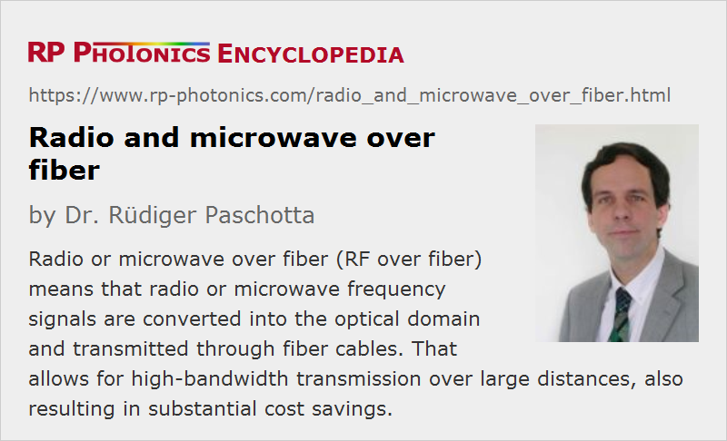

Radio and Microwave over Fiber
Acronym: RFoF, RF over fiber
Definition: the transmission of radio frequency signals through optical fibers
Alternative term: radio frequency over fiber
Categories: fiber optics and waveguides, lightwave communications
How to cite the article; suggest additional literature
Author: Dr. Rüdiger Paschotta
In principle, electrical radio frequency (RF) and microwave signals – for example, carrying audio, video or general internet data – can be directly transmitted through suitable electrical cables, for example coaxial cables. However, such cables exhibit substantial attenuation losses, which rapidly increase with increasing frequency. The frequency dependence of those losses can also introduce signal distortions. For such reasons, it normally becomes difficult to reach distances substantially more than a few tens of meters, and even then one may require additional RF amplifiers and signal regenerators to maintain the signal power at a sufficiently high level and preserve the signal quality.
Principle of Radio over Fiber
The explained problem can be solved with the method radio over fiber or microwave over fiber, the former in short often called RF over fiber and sometimes radio frequency over fiber. Essentially, the idea is to modulate a light wave with the radio or microwave frequency signal, transmit that light in an optical fiber and finally detect the light in order to recover the radio frequency signal. So one employs an electrical-to-optical (E/O) conversion and an optical-to-electrical (O/E) conversion at the two ends of an optical transmission medium. Effectively, one realizes an integration of wireless and fiber-optic networks and gets into area of RF or microwave photonics.
Although the transmitted signal frequencies can be quite different, ranging from some megahertz to dozens of gigahertz or even more, but the basic technology is always the same; only various technical details may be optimized differently in different frequency regions. The technology can to some extent be adapted even to terahertz signals, although detection is difficult in that area.
In the simplest case, one uses a single-frequency laser source (e.g. a DFB laser), an intensity modulator (e.g., a Mach–Zehnder modulator) driven with the radio frequency signal, the optical fiber (often a single-mode fiber, or possibly a graded-index multimode fiber) and a fast photodiode as a photodetector, followed by simple electronics to amplify the RF signal to the required power level. A basic setup for a unidirectional link with direct modulation is shown in Figure 1.
An even simpler method for the transmitter, but with tentatively lower quality, involves direct modulation of the semiconductor laser instead of the use of a separate modulator.
A bidirectional link can also be realized, where one uses two fibers are only a single one, and possibly a common antenna if on the right side we have a signal transmitter and receiver.
In some cases, one uses optical heterodyne detection, possibly also involving the transmission of light from two different laser sources, where the difference frequency is stabilized with an optical phase locked loop (OPLL). That can be convenient, for example, when signals with moderate bandwidth but a very high carrier frequency are to be transmitted. One may then just modulate one of the lasers with a moderate frequency, and the resulting center frequency is the average frequency difference of the two lasers. However, this approach is quite sensitive to phase noise of the lasers. Therefore, it may be preferable to use a single laser source and generate multiple sidebands by strong high frequency phase modulation.
The signal transmission is normally analog, not digital as in typical optical fiber communications systems. However, there are also digital radio over fiber (D-RoF) solutions, involving digital detection.
With more sophisticated technology, one can simultaneously transmit many different RF signals through a single fiber, typically using wavelength division multiplexing, where each signal channel obtains its own center wavelength and a certain optical bandwidth. The required components are common in optical fiber communications. With that approach, one better utilizes the huge optical bandwidth of the fiber, which is orders of magnitude larger than the typical RF bandwidth to be transmitted.
A variant is IF over fiber, where the fiber transmission is made with a lower intermediate RF frequency, and after photodetection one upconverts the signal to the required RF frequency. That approach lowers the demands on the optoelectronic system in terms of frequencies, and also reduces the impact of chromatic dispersion of the fiber, but requires more sophisticated technology at the receiving end.
Another variant, going further in that direction, is baseband over fiber, where the optical signal carries baseband data and the RF carrier is added only in the receiver. That approach makes the optical part simpler, while one needs more sophisticated technology for the electronics at the receiver end. One may also get a reduced link transparency, i.e., less flexibility for later changes of transmission formats.
A similar technology can of course be realized based on free-space optical communications, simply replacing the optical fiber with a beam collimator and a lens or similar around some distance of free space.
The transmitted RF bandwidth is generally limited by the bandwidth of transmitter and receiver, i.e., the E/O and O/E converters, but not by the optical fiber.
Usually, RF or microwave over fiber introduces only a moderate amount of transmission noise, if a low-noise laser source and a high-quality photodetector are used. The fiber itself causes only relatively low levels of phase noise.
Advantages over RF Cables
The main advantages of radio or microwave over fiber are the following:
- As the propagation losses in the fiber are quite small – for example of the order of only 0.2 dB/km in single-mode telecom fibers around 1550 nm –, and these are nearly frequency-independent in the whole optical frequency range of interest (flat frequency response), one can easily use fibers which are many kilometers long. When using fiber amplifiers in addition, even much longer transmission distances can be easily realized. Over such long lengths, propagation losses of RF or even microwave cables would be prohibitive. (For moderate propagation distances, one may also use other optical wavelength regions, where the transmission losses are higher, but transmitters and receivers are cheaper – for example, the 0.8-μm region.)
- Because the RF or microwave bandwidth is far lower than the width of the optical frequency range which can be transmitted through the fiber with low propagation losses, the cable is future-proof: if a larger RF bandwidth or mean frequency are required later on, only the transmitter and receiver may have to be adapted, but not the optical cable. In contrast to that, many coaxial cable installations in buildings became useless when moving to a satellite-based TV signals, where higher frequencies are required and the cable losses became too high.
- Compared with RF coaxial cables, optical fiber cables can be thinner and possibly more flexible, making it easier to lay them down in buildings, for example. Furthermore, the cost per meter of cable can be substantially lower.
- Because the receiver end can be made relatively simple and at the same time open to further changes of transmission formats (see below), the technology can provide substantial cost savings particularly in cases where many remote stations need to be operated.
- Signal transmission through optical fibers is immune to electromagnetic interference.
- For applications with antennas, for example, it can be an advantage that the cable is non-conducting, because the electronics at the lower end can be better protected against lightning strikes.
Typical Applications
Some typical applications are briefly described in the following sections.
Radio and TV Broadcast Networks
With radio over fiber technology, it is easily possible to create an infrastructure with a central station and multiple radio antenna units as base stations, which are connected to the center via radio over fiber. For each base station, one requires only comparably simple and cheap technology, which is also open for future changes of our example of transmission performance (format transparency). Changes to the sent-out signals can easily be implemented at the central location without affecting the base stations. That technology is also widely used for cable TV (CATV), where one needs a multipoint video distribution system.
Note that the higher the number of transmitted TV channels, the larger is the required frequency range, and the more difficult or expensive would be the traditional way of signal distribution with electrical coaxial cables.
Satellite Communications
Satellites in earth orbits typically communicate with ground stations through microwaves. It can be preferable to use microwave over fiber between the transmitter/receiver station and the building containing the control center, particularly if the distance between those is larger than e.g. 50 m.
One may also use multiple antenna sites, all connected with microwave over fiber to the operation center, even over distances of many kilometers. That way, one may for example divert the traffic to another station if local weather conditions are bad for one of the stations, or a station has a technical defect.
Closing Dead Zones
Some remote areas such as road tunnels are difficult to provide with internet access using broadband wireless technology only. RF over fiber from the outside world to local wireless stations can then be a solution. Alternatively, one may use a digital communications cable connecting the zone with the outside world, but this requires more sophisticated technology at the remote location. Particularly when a large number of antenna units is required, radio over fiber tends to be substantially more economical.
Antennas for Cell Phone Communications
For a base station of a cell phone communications network, the antenna needs to be placed at a high altitude, while it is preferable to keep most of the electronics near the ground for easy access e.g. during maintenance operations. However, if antenna and electronics are simply connected with a long RF cable, the substantial propagation losses are problematic, particularly because of the substantial transmitter power required: the RF power amplifier at the bottom then needs to generate substantially more power in order to have sufficient power at the antenna despite the cable losses. With radio or microwave over fiber technology, one can place a simple optical receiver and microwave power amplifier next to the antenna, while having all of the other electronics at the bottom. That can result in substantial savings of electrical energy.
Note that substantial changes of transmission methods – for example, from 3G to 4G and 5G – can easily be implemented without affecting the power amplifier at the top, at least as long as the frequency regions are not extended.
The electrically non-conducting nature of the fiber makes it quite simple to protect most of the electronics against lightning strikes through the exposed antenna; only the power amplifier remains at higher risk.
One can even connect multiple base stations (remote antenna units, RAUs) with a single electronic station for generating the sensor signals and processing the received signals. The typical distances between such stations in cities – some hundreds of meters or a few kilometers – are easily bridged with fiber cables. With that approach, the required hardware can be cheaper, and maintenance operations for multiple stations can be done at a single location.
Note that the general trend to higher transmission bandwidths (data rates) and correspondingly higher transmission frequencies, which tentatively leads to a smaller cell size and a larger number of required antennae units, exactly favors the use of RF or microwave over fiber, mostly due to the cost savings from a reduction of the complexity of the antennae units.
Road to Vehicle Communications
There are various preliminary concepts for future road to vehicle communications, for which traditional cell phone systems may not be suitable. One will then probably use a large number of antenna units along the roads, which would probably be connected with microwave over fiber.
Broadband Wireless Indoor and Outdoor Communications
Indoor communications like WLAN as well as cell phone systems work with high radio or microwave frequencies of several gigahertz, and in the future (e.g. for 5G) even at tens of gigahertz, which can hardly transmitted through electrical cables. One might then use microwave over fiber between a transmitter/receiver antenna and the corresponding electronics, if one does not want to have them close together, for example for reasons of easier maintenance. That technology may become quite important for future systems, operating at substantially increased frequencies, where the data rates are quite high, while the usable range (cell size) is small, so that many base stations are required. One may then connect many such base stations via fibers with a remote access node, which itself is connected through a broad bandwidth optical core network, e.g. based on dense wavelength division multiplexing (DWDM).
Non-telecom Applications
RF and microwave over fiber can be applied not only to communication signals, but also to other RF or microwave signals, e.g. carrying GPS data or sensor data, or signals used for certain technologies such as particle accelerators and radio frequency astronomy.
Suppliers
The RP Photonics Buyer's Guide contains 5 suppliers for RF over fiber systems. Among them:
Questions and Comments from Users
Here you can submit questions and comments. As far as they get accepted by the author, they will appear above this paragraph together with the author’s answer. The author will decide on acceptance based on certain criteria. Essentially, the issue must be of sufficiently broad interest.
Please do not enter personal data here; we would otherwise delete it soon. (See also our privacy declaration.) If you wish to receive personal feedback or consultancy from the author, please contact him e.g. via e-mail.
By submitting the information, you give your consent to the potential publication of your inputs on our website according to our rules. (If you later retract your consent, we will delete those inputs.) As your inputs are first reviewed by the author, they may be published with some delay.
Bibliography
| [1] | J. Capmany and D. Novak, “Microwave photonics combines two worlds”, Nature Photonics 1, 319 (2007), doi:10.1038/nphoton.2007.89 |
| [2] | C. Lim et al., “Fiber-wireless networks and subsystem technologies”, IEEE J. Lightwave Technol. 28 (4), 390 (2010), doi:10.1109/JLT.2009.2031423 |
See also: fibers, optical data transmission
and other articles in the categories fiber optics and waveguides, lightwave communications
|  |
If you like this page, please share the link with your friends and colleagues, e.g. via social media:
These sharing buttons are implemented in a privacy-friendly way!